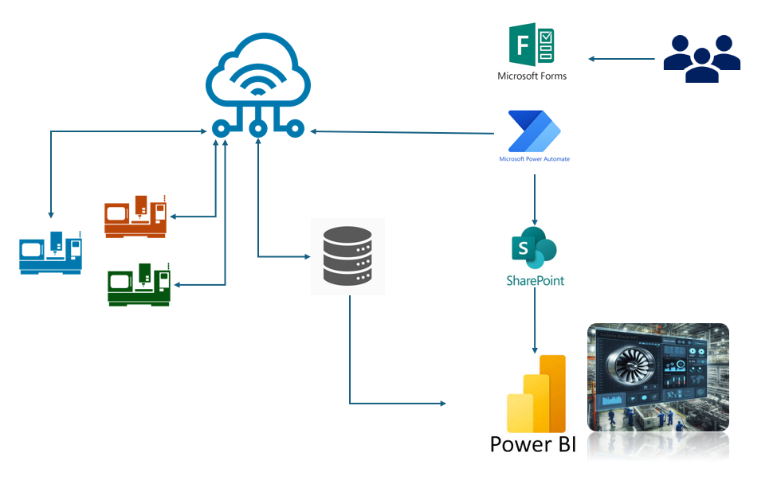

Overview
This solution was developed to enhance yield and process reliability in turbine blade manufacturing, by monitoring critical machining input parameters—such as coolant temperature, coolant concentration, fixture alignment, and water pressure. The solution digitized process controls and surfaced them through a live dashboard, enabling early detection of deviations and proactive interventions. The system also incorporates a machine stoppage mechanism, where KPI threshold breaches trigger automated responses via Power Automate, interfacing directly with CNC programs to halt operations and prevent downstream defects.
Tools & Technologies
Technical Highlights
